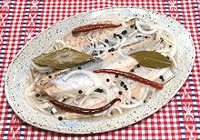

|
Pickled HerringDenmark, Norway, Sweden - Sursild / Marineret Sild | ||||
| Makes: Effort: Sched: DoAhead: |
6 app *** 1 day Must |
Popular throughout Scandinavia, the Baltic States and Northern Europe, pickled herring is not hard to make and home made will be a lot better than store bought. | |||
|
2 8 ----- 3/4 1/4 1/2 1/3 1 4 2 ----- |
oz --- c c c c T --- |
Herring (1) Onion, white -- Pickle Vinegar (2) Vermouth (3) Water Sugar Peppercorns Bay Leaves Chilis, dried (4) ------------------ |
More difficult than doing the recipe may be, in many regions, finding a source for the brined herring. Make - (24 hours, 3/4 hour work)
|